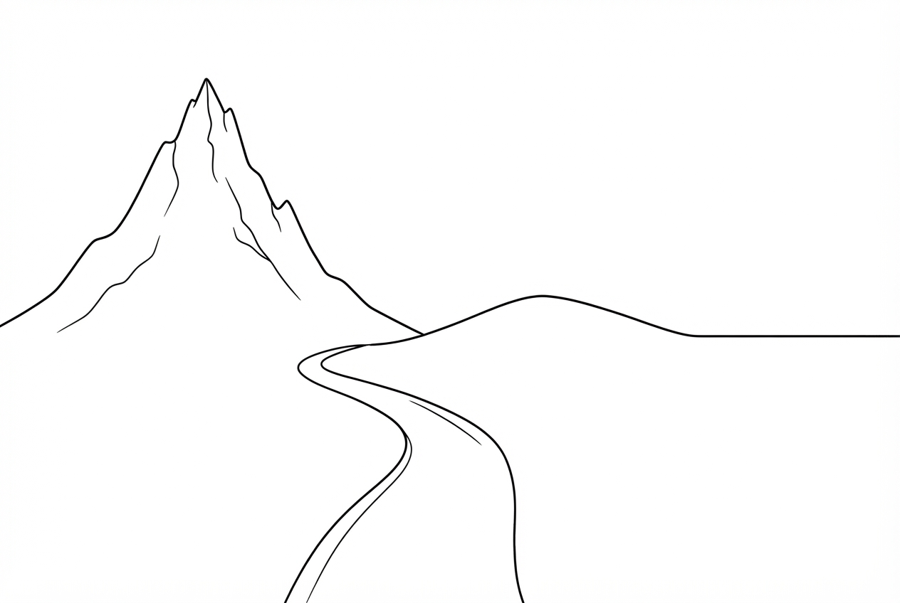
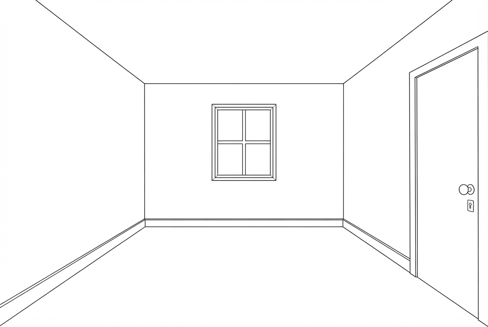
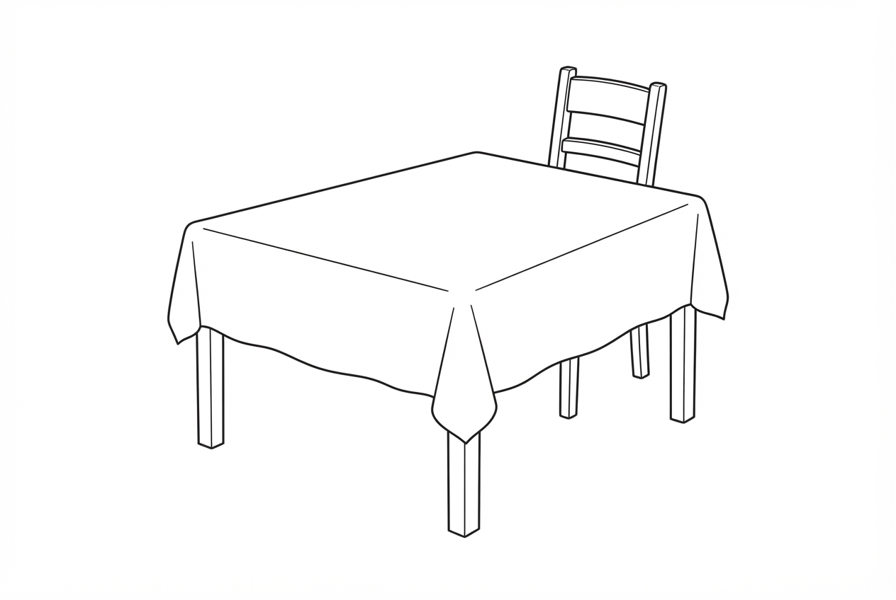
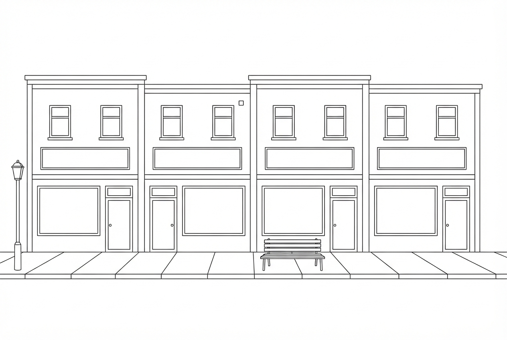

Habillez votre personnage : au moins six éléments, avec les couleurs.
Ajoutez-lui des cheveux et un objet dans la main. Écrivez son prénom sous les pieds.
À deux, sans se montrer les feuilles. Chacun complète son dessin en cachette, puis le décrit à son partenaire, qui le reproduit sans le voir. On compare les deux dessins à la fin.
Base 1 — la silhouettePrénom :
Vêtements
un chapeau
une tuque
une casquette
un chandail
une chemise
un manteau
un veston
des pantalons
des culottes courtes
une jupe
une robe
des bas
des souliers
des bottes
des sandales
Accessoires
des lunettes
un foulard
des mitaines
une ceinture
une montre
un sac à dos
un parapluie
un collier
Couleurs
rouge
orange
jaune
vert
bleu
mauve
rose
brun
gris
noir
blanc
pâle
foncé
Cheveux et visage
courts
longs
frisés
raides
blonds
bruns
roux
une barbe
une moustache
il sourit
Pour décrire
Mon personnage porte un chandail rouge et des pantalons bleus.
Sur sa tête, il y a une tuque verte.
Ses cheveux sont courts et bruns.
Dans sa main droite, il tient un parapluie.
Il ne porte pas de souliers : il porte des bottes.
Entendez-vous d'avance : la main droite du personnage est à votre gauche
quand vous le regardez. Dites-vous « la droite du dessin » ou « la droite du personnage »?
Il y a · prépositions de lieu
Le paysage
La ligne d'horizon et le chemin sont déjà là. Ajoutez au moins sept
éléments, dont deux dans le ciel. Rien ne doit toucher le chemin.
À deux, sans se montrer les feuilles. Chacun complète son dessin en cachette, puis le décrit à son partenaire, qui le reproduit sans le voir. On compare les deux dessins à la fin.

Base 2 — le paysagePrénom :
Dans le ciel
le soleil
un nuage
la lune
un oiseau
un avion
un arc-en-ciel
la pluie
Sur la terre
une montagne
une colline
un arbre
un sapin
une maison
une grange
une clôture
une rivière
un pont
un lac
une barque
une vache
un cheval
un tracteur
des fleurs
une roche
Où? — prépositions
à gauche de
à droite de
au-dessus de
en dessous de
devant
derrière
entre
à côté de
près de
loin de
au milieu
dans le coin
sur
sous
au bord de
Pour décrire
Il y a une grande montagne à gauche, derrière la maison.
Le soleil est dans le coin, en haut à droite.
Entre l'arbre et la clôture, il y a deux vaches.
Le chemin passe devant la maison et va vers le pont.
Mon arbre est plus grand que la maison.
Meubles · sur, sous, contre le mur
Le logement
La pièce est vide : une fenêtre au fond, une porte à droite. Meublez-la
avec au moins sept objets. Placez-en un au mur et un par terre.
À deux, sans se montrer les feuilles. Chacun complète son dessin en cachette, puis le décrit à son partenaire, qui le reproduit sans le voir. On compare les deux dessins à la fin.

Base 3 — la pièce videPrénom :
Meubles
un lit
un divan
un fauteuil
une table
une chaise
une commode
une table de chevet
une étagère
une lampe
un tapis
des rideaux
Objets
un cadre
un miroir
une horloge
une plante
un téléviseur
un ordinateur
des livres
une poubelle
un oreiller
une couverture
un chat
Où? — prépositions
sur
sous
dans
contre le mur
au plafond
par terre
dans le coin
à côté de
en face de
entre
au-dessus de
à gauche de la porte
Pour décrire
Le lit est contre le mur, sous la fenêtre.
Sur la table de chevet, il y a une lampe et un livre.
Le tapis est au milieu de la pièce, devant le divan.
Qu'est-ce qu'il y a à gauche de la porte?
Le chat dort sous la table, pas sur la table.
Aliments · quantités · mettre la table
Le repas
Mettez la table pour une personne, puis servez le repas. Au moins huit
objets, avec une quantité pour trois d'entre eux : « deux tranches de pain », « un verre de
lait ».
À deux, sans se montrer les feuilles. Chacun complète son dessin en cachette, puis le décrit à son partenaire, qui le reproduit sans le voir. On compare les deux dessins à la fin.

Base 4 — la table misePrénom :
Sur la table
une assiette
un bol
un verre
une tasse
une fourchette
un couteau
une cuillère
une serviette
une nappe
une bouteille
un pot
une chandelle
Aliments
du pain
du fromage
de la soupe
une salade
du poulet
du poisson
des patates
du riz
des carottes
une pomme
une banane
des fraises
un gâteau
du café
du lait
du jus
Combien? — quantités
une tranche de
un morceau de
un verre de
une tasse de
une assiette de
un pot de
beaucoup de
un peu de
trois
une demi-
Pour décrire
Au milieu de la table, il y a une assiette de soupe.
La fourchette est à gauche de l'assiette, le couteau à droite.
J'ai dessiné deux tranches de pain à côté du bol.
Il y a un peu de fromage, pas beaucoup.
Le verre est devant l'assiette ou derrière?
Le piège utile : les partitifs. « du pain », « de la soupe », « des
fraises » — obligez chaque personne à nommer la quantité, sinon l'autre ne saura pas combien
en dessiner.
Commerces · se situer · ordre
La rue
Quatre commerces, quatre enseignes vides. Décidez quel commerce occupe
chaque bâtiment, écrivez le nom sur l'enseigne, et dessinez deux choses dans chaque vitrine.
Ajoutez ensuite trois éléments sur le trottoir.
À deux, sans se montrer les feuilles. Chacun complète son dessin en cachette, puis le décrit à son partenaire, qui le reproduit sans le voir. On compare les deux dessins à la fin.

Base 5 — la rue commercialePrénom :
Commerces
une épicerie
un dépanneur
une pharmacie
une boulangerie
une banque
un restaurant
un café
une librairie
un salon de coiffure
une quincaillerie
une buanderie
un bureau de poste
Sur le trottoir
un arrêt d'autobus
un banc
un lampadaire
une poubelle
un arbre
un vélo
une auto
un chien
une boîte aux lettres
un parcomètre
Se situer
le premier
le deuxième
le troisième
le dernier
à gauche de
à droite de
entre
à côté de
au coin
au bout de la rue
en face de
au-dessus de
Pour décrire
Le premier bâtiment à gauche, c'est une pharmacie.
La boulangerie est entre le dépanneur et la banque.
Dans la vitrine du restaurant, j'ai dessiné une pizza et une plante.
Devant le troisième commerce, il y a un arrêt d'autobus.
Comment ça s'écrit, « quincaillerie »? Q-U-I-N…
Prolongement : une fois les deux rues comparées, demandez un trajet —
« Je sors de la banque, je tourne à droite, je passe devant… ». Le dessin devient un plan.